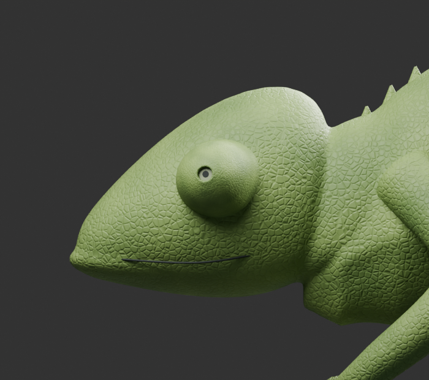
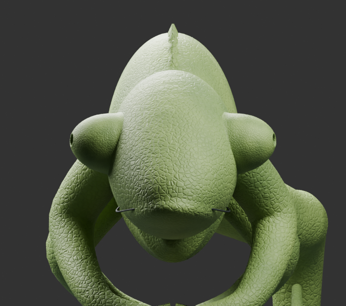
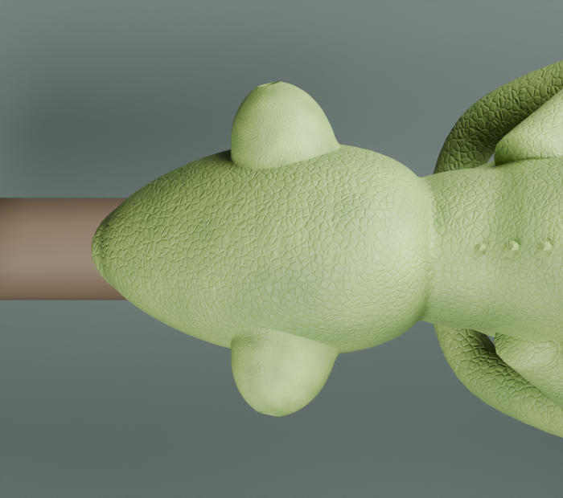
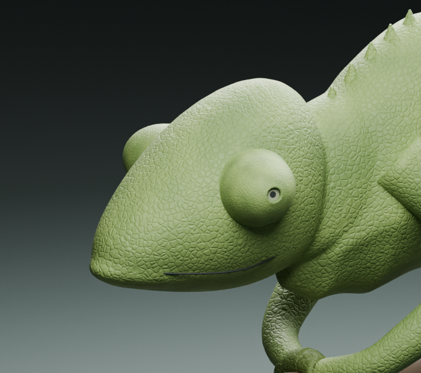

V8 · kabul edilen 50 / 15 / 75 — Değişecek profil doğrudan kafa üzerinde
Alttaki görüntü iki panelde de orijinal G1’dir. Bu G1, body-study/chameleon-study-v4.blend kaynaklı eski boyut referansıdır; güncel rig modeli değildir. Turuncu yaklaşık mevcut dış sınır; yeşil önerilen yeni kontur. Pullar henüz yeniden şekillendirilmedi. Bu bir hedef çizimidir, değiştirilmiş Blender renderı değildir.
ÖNCE / G1 — kabul edilen küçük göz boyutu
Turuncu: mevcut profil, değiştirilmedi.
HEDEF / V8 · kabul edilen 50 / 15 / 75 — uca doğru daha daralan profil
Yeşil: yeni hedef. Mavi düz kenar: açıklık (a) yüksekliği. Kontur iki tarafta aynalanmıştır.
Açıklık çizimi nasıl değişti?
Mavi açıklık artık dışa bombeli oval yay değil, iki uç arasında düz bir profil kenarıdır. Bu, açıklığın yandan şematik gösterimidir; gerçek göz açıklığının dikdörtgen olduğu anlamına gelmez. Açıklık yüksekliği ve merkezi korunmuştur. Açıklığa yaklaşan omuz daha az şişkin; profil geniş kökten yuvarlak uca daralıyor. İğne ucu yapılmıyor. Açıklık, yeni kaydırıcıyla iki gözde aynı katsayıda küçültülebiliyor. Kök–kafa bağlantısı çizimde korunuyor. Yeşil çizginin dışında kalan mevcut pullar, hedef modele uygulandığında taşınması gereken alanı gösterir.
Önceki demolar ve model dosyaları korunmuştur. Nihai kullanıcı kararı: profil %50, açıklık %15 küçültme, L %75. Onaylanmış model değişikliği, pul deformasyonu veya animasyon doğrulaması iddiası yoktur. Bu aşamada yalnız hedef görünüş seçiliyor.
G1 — kabul edilen boyut, dört orijinal açı
Şekil kontrolleri sadece üstteki ön görünüş çizimini değiştirir. Aşağıdaki dört render sabit referanstır. L/B, elle seçilmiş taban çizgisinden hesaplanır; önceki V37 çizimiyle doğrudan karşılaştırılamaz.

Yan
Ön
Üst
Üç çeyrek